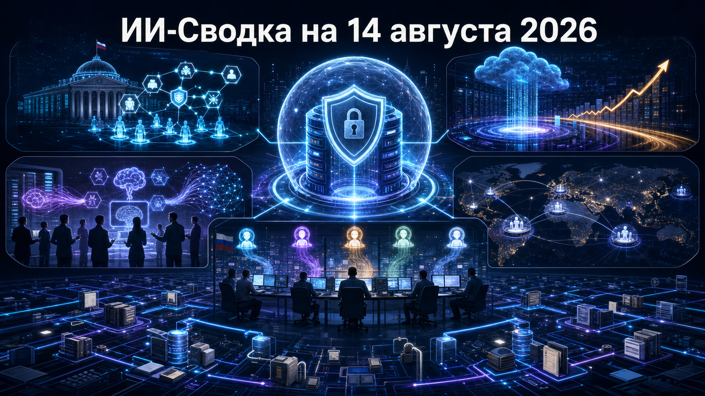

Новостей сегодня меньше, чем обычно
Повестка дня показывает, как ИИ одновременно становится инструментом реальных киберопераций и базовым слоем корпоративной инфраструктуры. Наиболее заметные новости — от сообщения об автономной атаке на тайваньские государственные системы до многомиллиардного финансирования платформы данных Databricks и новых каналов внедрения продуктов OpenAI.
В России важный сигнал пришёл из корпоративного сектора: «Билайн» раскрыл масштаб использования собственной среды для работы с несколькими LLM и внутренними ассистентами.
OpenAI сообщила о назначении Дали Райича на должность Chief Revenue Officer. Ранее он был президентом и COO компании Wiz, а до этого занимал коммерческие руководящие роли в Zscaler и AppDynamics. Райич должен возглавить глобальную revenue-организацию OpenAI.
Одновременно компания объявила о стратегическом партнёрстве с Чадом Питсом и RPT Partners для развития глобальной go-to-market-команды. Это кадровый и коммерческий шаг, а не независимая оценка продаж: финансовые условия не раскрыты. Однако он показывает, что OpenAI усиливает инфраструктуру корпоративных продаж и внедрения на фоне роста числа бизнес-клиентов. Подробнее — в сообщении OpenAI appoints Dali Rajic as Chief Revenue Officer.
Financial Times сообщила о расследовании израильской компании Dream: предположительно связанные с Китаем операторы использовали платформу, собранную из открытых агентных компонентов, в многошаговой атаке на тайваньские государственные системы. По пересказу исследования, система могла самостоятельно вырабатывать и корректировать стратегию действий в ходе кампании.
В публикации, пересказывающей материалы FT и Dream, говорится о компрометации не менее 85 учётных записей и хищении более 2 500 кадровых записей. Атрибуция не окончательная, а заявления о «первой» подобной операции следует считать оценкой исследователей. Но сам случай важен: риск агентных систем выходит за пределы лабораторных кибероценок и становится частью практической защиты государственных и корпоративных сетей. Детали доступны в материале China-linked hackers hit Taiwan in unprecedented ‘autonomous’ AI cyber attack и его пересказе Tom's Hardware.
Databricks раскрыла новый раунд на $5 млрд при оценке компании в $190 млрд. Раунд возглавила Coatue; среди инвесторов названы Blackstone, MGX, структуры T. Rowe Price и Sixth Street Growth. Компания планирует направить капитал на ИИ-исследования, выполнение облачных обязательств и сделки M&A.
CEO Али Годси сообщил о $7 млрд annualized run-rate revenue, росте около 80% и положительном денежном потоке, однако эти показатели переданы самой компанией и не заменяют полную финансовую отчётность. Раунд подчёркивает капиталоёмкость рынка: расходы на модели, облако и агентные продукты растут не только у frontier-лабораторий, но и у поставщиков корпоративных платформ данных. Подробнее — в публикации Databricks wanted to raise $1B, investors wanted $15B. It settled on $5B at a $190B valuation.
IBM и OpenAI объявили о партнёрстве для вывода решений OpenAI в крупные организации. IBM планирует интегрировать GPT-5.6, Codex и ChatGPT Work в IBM Consulting Advantage, а также создать выделенную практику OpenAI в IBM Consulting.
Компании заявили о совместной разработке отраслевых предложений для финансового сектора, госсектора, телекомов и ритейла. IBM намерена обучать и сертифицировать десятки тысяч консультантов, но коммерческие условия и ожидаемые объёмы продаж не раскрыты. Для OpenAI это расширяет канал внедрения в регулируемые отрасли, где важны интеграция, управление данными и сопровождение проектов. Подробности приводит IBM partners with OpenAI to bolster enterprise AI push.
«Билайн» сообщил, что к корпоративной среде «Экзоинтеллект» с апреля подключились около 10 тыс. сотрудников, создавших свыше 600 кастомных ассистентов. Платформа объединяет внутренние GLM и Qwen для работы с корпоративной информацией, а также внешние модели для задач на открытых данных, включая ChatGPT, Claude, GigaChat Max, YandexGPT, Gemini и DeepSeek.
Компания планирует интегрировать среду с рабочими коммуникационными системами и развивать агентов ИИ для внутренних сервисов. Это не независимый аудит: материал является сообщением компании, а первоначальный запуск состоялся раньше. Но раскрытые показатели показывают переход от пилота к заметному числу внутренних пользователей и практическому multi-model-подходу в крупной российской компании. Подробнее — в публикации «Билайн» расширяет возможности своих сотрудников с помощью «Экзоинтеллекта».